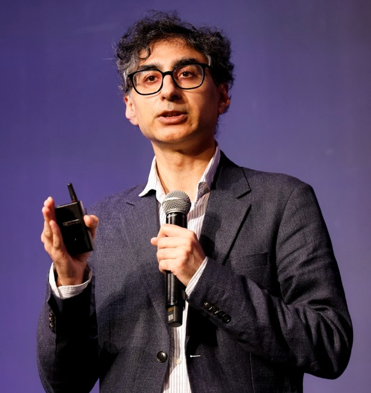

Shaukat Ali
Shaukat Ali is a Chief Research Scientist, Research Professor, and Head of Department at Simula Research Laboratory in Oslo, Norway. He also serves as director of the Norwegian Quantum Software Center. His research focuses on developing advanced methods for engineering cyber-physical systems using artificial intelligence, digital twins, and quantum computing.
He has led numerous national and European research projects in software testing, search-based software engineering, model-based systems engineering, and quantum software engineering. He is a co-founder of several key initiatives in the emerging field of quantum software, including the International Workshop on Quantum Software Engineering (held at ICSE), the International Conference on Quantum Software, and the QC+AI Workshop (held at AAAI). He also represents Simula in multiple national and international quantum computing research and industry networks.
Lecture
Foundations of Quantum Software Engineering
Abstract
Quantum Software Engineering (QSE) is an emerging field within software engineering focused on cost-effective software development for quantum computers. Although still in its early stages, research in QSE is growing, particularly in the design, development, testing, and maintenance of quantum software. As interest continues to rise, QSE is attracting both new and experienced researchers and practitioners. This talk will provide an introduction to quantum computing, followed by an overview of QSE, including requirements, modeling, coding, testing, and debugging, and will highlight current challenges and future research directions.